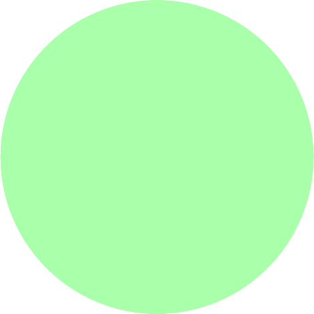
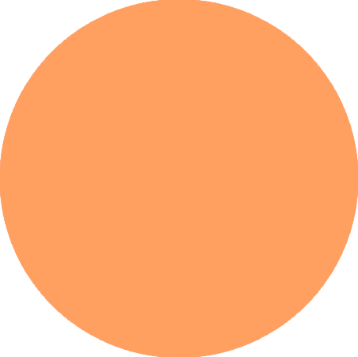
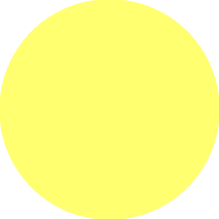
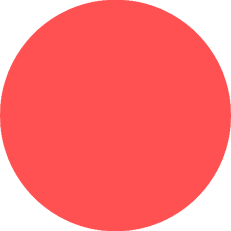

{{pageElements.checkinLogText}}




{{wellness.date | date: "MMMM d, yyyy"}}
{{wellness.entryNote.substring(0, 30)}}...
{{wellness.entryNote}}
{{wellness.date | date: "H:mma"}}
{{wellness.moodScore}}
{{wellness.sleepScore}}
{{wellness.dietScore}}